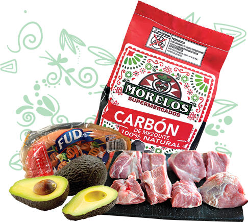

Fresco. Cercano. Muy nuestro.
La tradición que conoces, en una experiencia más fresca.
Carnicería, productos latinos, panadería y sabores preparados todos los días.
25%en productos seleccionados

Sabor de casa